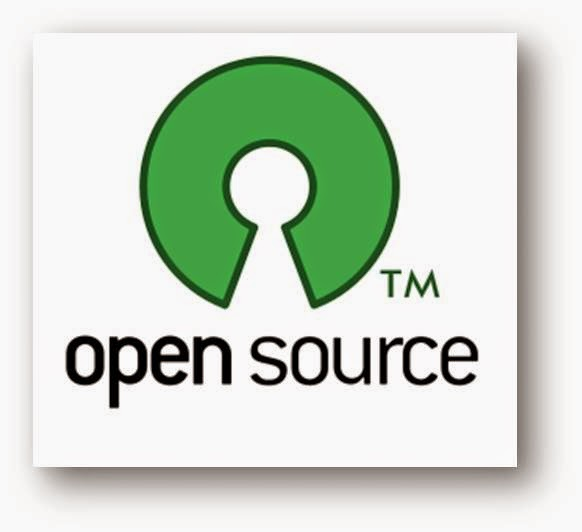

5 Keuntungan menggunakan Software Open Source

Open Source atau Sumber terbuka adalah sebuah software yang gratis alias free dan dapat dikembangkan atau developed oleh siapa saja. Contoh aplikasi Open Source antara lain : GIMP ( Pengganti Photosop ), Inkscape ( Pengganti Corel Draw ), LibreOffice ( Pengganti Microsoft Office ), VLC Media Player, dan masih banyak lagi.
Sedangkan contoh sistem operasi open source adalah sistem operasi yang berbasis Linux, seperti Android, Debian, RedHat, Chrome OS, Firefox OS, Tizen, dan masih banyak lagi Untuk mendapatkan software open source, anda bisa mencarinya di sourceforge.net
Developer pihak ketiga mengembangkannya melalui source code ( kode sumber ) yang tersebar dari aplikasi yang berstatus Open Source.
Kode sumber ini biasa didapatkan di Github. Dengan diberikannya code sumber tersebut, seorang pengembang pihak ketiga akan mendapatkan beberapa manfaat atau keuntungan. Apa saja manfaat atau keuntungannya ? Nah, pada postingan kali ini, saya akan membahas mengenai 5 Manfaat atau keuntungan menggunakan Software Open Source.
- Gratis alias Free!
- Membuat pengguna lebih pintar
- Biasanya bersifat corss platform
- Membuat Pengguna lebih mandiri
- Legal
License 100 Gratis, sehingga tidak memerlukan biaya tambahan untuk menikmatinya. Tentunya ini sangat menguntungkan, terutama bagi rakyat Indonesia yang suka gratisan.
Karena kita telah diberikan source code dari sang pembuat softwarenya, maka kita bisa berexperimen seperti memodifikasi aplikasinya, dan lain sebagainya.
Biasanya aplikasi open source tersedia diberbagai sistem operasi, contohnya Telegram. Aplikasi chattingan yang satu ini tersedia di berbagai platform, seperti Linux, Windows, Android, Mac, iOs, & Windows Phone.
Karena source codenya sudah tersebarkan oleh sang pembuat software open source tersebut, maka kita bisa memperbaiki masalah atau bug yang ada pada software open source tersebut. Jadi, kita tidak harus sang pembuat software untuk memberikan update terbaru.
Pengguna Open Source akan terhindar dari pembajakan software yang bersifat ilegal, karena Software Open Source 100% gratis dan yang pasti Legal. Hal ini tidak akan melanggar hak cipta serta aman apabila ada razia software ilegal.
Sekian 5 manfaat atau keuntungan menggunakan software open source, terima kasih.